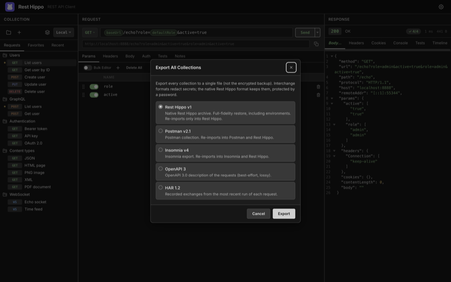
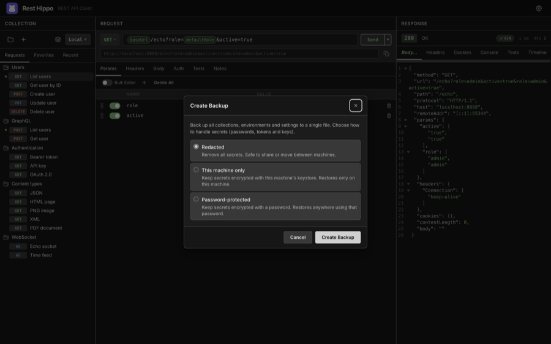

Import, Export & Backup
Rest Hippo can exchange collections with other tools and back up your entire workspace. There are two separate features:
- Import / Export moves collections in and out. The native Rest Hippo v1 format is a lossless, full-fidelity archive (secrets kept, password-protected) that restores in place; the standard interchange formats (Postman, Insomnia, OpenAPI, HAR) are for sharing with other tools and redact secrets.
- Backup / Restore snapshots your whole workspace — collections, environments, and settings — with a choice of how to handle secrets.
Exporting
Export a single collection from its right-click menu (Export…) or the Export icon on its row in the collections manager, or export everything at once from the Export All button in the collections manager's sidebar toolbar:

Choose a format:
| Format | Notes |
|---|---|
| Rest Hippo v1 | Native, lossless archive. Restores everything exactly — including environments. Re-imports only into Rest Hippo. |
| Postman v2.1 | Postman collection. Re-imports into Postman and back into Rest Hippo. |
| Insomnia v4 | Insomnia export. Re-imports into Insomnia and back into Rest Hippo. |
| OpenAPI 3 | A best-effort, lossy OpenAPI 3.0 description of the requests. |
| HAR 1.2 | Recorded request/response exchanges from recent runs. |
In the interchange formats (Postman, Insomnia, OpenAPI, HAR), secrets — passwords, tokens, and keys — are redacted, so those exports are safe to share. Rest Hippo then opens a native save dialog.
The native Rest Hippo format
Rest Hippo v1 is a full-fidelity archive meant for round-tripping your own work — moving a collection between machines, or snapshotting it before a big edit. Unlike the interchange formats, it keeps everything about the exported requests: method, URL, query and path params, headers, the full Auth configuration for every scheme, captures, scripts, notes, and bodies.
- Variables travel referenced-only. The archive adds an environments
section (the collection's environments and global variables) and the
collection's own variables — but only the ones the exported requests reference
(
{{name}}, followed transitively). Anything unused is left out, so exporting a single folder never drags in the rest of the collection's variables (or forces a password for secrets it doesn't use). A folder's own variables always travel inside that folder. - Secrets are kept, not redacted. If the exported set contains any secret it
actually uses (an auth credential or a referenced
securevariable with a value), Rest Hippo asks you to choose a password and encrypts those values into the file with the same scheme as a password-protected backup. With no secrets, there's no prompt and the file is plain JSON. Treat a password-protected archive like a credential export — anyone with the file and the password can read its secrets. - Import merges in place. Re-importing restores into your active collection rather than creating a duplicate: a folder that already exists (matched by id, then name) is reused and its contents restored into it; a request that already exists is replaced by the archived copy; anything new is created. Environments and variables are matched the same way and only added when missing — an existing value is never overwritten. A password-protected archive prompts for its password on import.
Importing
Open the Collections dialog and click Import — the up-arrow tray icon in its sidebar toolbar, next to Export. It opens the URL-or-file import described under Import from a URL or file below; click Browse… there to pick a file with the native open dialog. Rest Hippo recognizes the format automatically:
- Rest Hippo v1 native archives (
.json) — merged in place (see above) - Postman collections (
.json) - Insomnia exports (
.json/.yaml) - OpenAPI 3 / Swagger 2.0 specifications (
.json/.yaml) - HAR 1.2 captures (
.har)
The file picker filters to these formats — .json, .yaml / .yml, and .har.
It reconstructs the folder structure, requests, headers, query, auth, and variables, and adds them to your workspace as a new collection. A HAR capture (a browser's "Save all as HAR", or a proxy export) is imported request by request — grouped into a folder per host — so you can replay real traffic; only the requests are imported, not the recorded responses.
OpenAPI / Swagger specs describe their operations as relative paths, so
importing one first asks for a base-URL variable: a name (default baseUrl)
and a value. Every imported request is prefixed with that variable — e.g.
{{baseUrl}}/pets/{{petId}} — so the host lives in one editable place. The value
is pre-filled from the spec's servers / host when it has one; otherwise leave
it blank and set it later in the collection's Variables.
Import from cURL
To pull in a single request from a terminal, API docs, or a browser's Copy as cURL, right-click the tree toolbar's [+] (New Request) button and choose Import from cURL…, then paste the command:
curl https://api.example.com/users \
-H 'Authorization: Bearer ...' \
-d '{"name":"Ada"}'
Rest Hippo parses the method, URL and query, headers, body (-d / --data*,
--data-urlencode, and -F form fields), and authentication — a -u user:pass
or an Authorization: Bearer/Basic header is lifted into the request's Auth
tab rather than left as a raw header. The result is added as a new collection,
ready to send.
Tip — paste a cURL straight onto a request. You can also paste a
curl …command directly into a request's URL bar. Rest Hippo recognizes it and rewrites that request to match the command (method, URL, params, headers, body, auth), instead of dropping the raw text into the field. A brand-new, empty request is updated in place; if the request already has content, Rest Hippo asks you to confirm before overwriting it.
Import from a URL or file
Click Import in the Collections dialog toolbar to open a single field that
takes either a URL or a local file path. The title tracks what you type: paste an address and it reads Import
from URL; type a path (or a name ending .json / .yaml / .yml / .har) and
it flips to Import from file.
https://api.example.com/openapi.json
/Users/you/Downloads/petstore.yaml
A URL is fetched through the desktop app's request engine (not the browser),
so there are no CORS limits, and a document served from http://localhost by a
service running on your machine works just as well. If it sits behind a token,
add the optional Authorization header: a bare value such as Bearer … is
sent as Authorization, or use a Name: Value line for a custom header (e.g.
X-API-Key: …). The header field is hidden while you're importing a file.
A file path is read directly. If you'd rather not type it, click Browse… to pick the file with the native open dialog — that's also the way to import in the Mac App Store build, where typed paths can't be read from the sandbox. A path that can't be read shows an inline error and leaves the dialog open so you can fix it or switch to Browse….
Either way the format is detected automatically — the same set as a file import
(Rest Hippo native, Postman, Insomnia, OpenAPI 3 / Swagger 2.0, HAR) — and the
import then continues exactly like one. An OpenAPI / Swagger spec still shows
the base-URL variable prompt described above; imported from a URL, its value
is pre-filled from the host you imported from (so a spec with a relative
servers path still gets a complete, usable base URL). Every other format
imports straight through with no prompt.
Backup & restore
A backup captures your complete workspace in one file. Open it from the app's File menu (Back up… / Restore…).

When creating a backup, choose how secrets are handled:
| Mode | Secrets | Restores on… |
|---|---|---|
| Redacted | Removed entirely | Anywhere — safe to share or move between machines |
| This machine only | Kept in their at-rest encrypted form, tied to this machine's Security setup | Only this machine |
| Password-protected | Encrypted with a password you choose | Anywhere, with the password |
Restoring reads a backup file (prompting for the password if it's password-protected) and lets you Merge it alongside your current collections or Replace everything with the backup's contents.
Use This machine only for routine local backups (no password to remember), and Password-protected when you need to move a full workspace — secrets and all — to another machine.
Next: Settings & Themes →